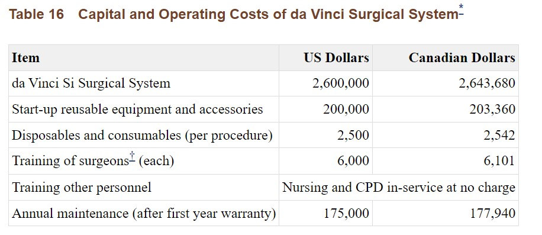

Technology Choices
As we have seen from the research of opportunities and risks posed by the application of surgical robots in the medical industry, these telerobots bring a myriad of health benefits and technological advancements. However, with these benefits are equally harmful risks that are not only detrimental to the patient but also to the economy of this field.
Perhaps the greatest advantage of using surgical robots can be the improved state of wounds post-surgery, including the significantly minimised scarring and therefore pain. Often maintaining the wound area sterile can be the hardest part of a successful recovery. With robotic surgery, this issue is greatly reduced. However, with such great outcome comes an equally long preparation time, as often these surgical robots take hours to set up in the surgery room for the patient. This means that surgical robots cannot be used for emergency patients who have no time to lose, or patients with a case so complicated that the surgeon’s decision-making skills are prioritised over the fine motion-control of these surgical robots (Kevin, 2019).
What this limitation implies is that surgical robots are more often a privilege for patients who both have the time and wealth to afford them. Due to the cosmetic benefits surgical robots are always in high demand and accompanying this is the high cost of the robots at $2.6 million USD as well as the time it takes to specially train a surgeon, at an exorbitant amount of $6000 USD (Ho et al., 2011).
Figure 3:
How is this high price tolerated? This directs us to the unfortunate reality of surgical robots – monopolisation. Surgical robots are a relatively new field in the medical industry and so has both the potential and limitations seen from a growing field. ‘Intuitive’, a robotics company based in California is the corporation in charge of producing the majority of surgical robots used in practice today – the ‘DaVinci Systems’. While these DaVinci robots are high precision, ergonomically designed robotic masterpieces, it also means that Intuitive is overshadows other companies attempting to grow in this field. Unsurprisingly, this means that surgeons hoping to train in surgical robots have little to no choice but to pay whatever is declared by Intuitive, consequently raising the price for patients as well by an average of USD $5000 (Why is robotic surgery so expensive?, n.d.).
With all technology, the risk of cybercrime is yet another disadvantage we must discuss.
All robots that share a risk are at risk of being hacked, where critical information on patients can be gathered.
Different cyber attacks ranging from ‘man-in-the-middle attacks’ to ‘denial-of-service attacks’ (Langston, n.d.) can result in different actions such as a disruption in the robots’ movement such as failures to grab or the entire robot being shut off.
As a result, it is entirely possible for hackers to stop operations,
severely harm patients or gather private information which isa severe violation of medical confidentiality leading to multiple lawsuits.
However, these remote hacks can be significantly prevented by hospitals and corporations ensuring the hardware and operating system of the robots is up to date.
The addition of complex passwords and two factor autentication/ face scans could prevent these attacks from occuring as well.
Another solution to this can be the introduction of 5G, as explained by Marc Witteman (Koon, 2022), CEO of Riscure. "This technology(5G) offers low latency and high reliability and is suitable to remotely controlled robotic surgery...There are weaknesses in the product that do not impede normal operation.
However, an attacker who knows those weaknesses, and who can combine them for malicious ends, can exploit them.”
So ultimately, it is prevention against hackers rather than the issue of the security technology of the robots themselves.
By including these robots in scheduled checks should be the main step to preventing cybercrimes.
Of course, while most surgical robots will be operating on heavily guarded private networks this cybercrime is a main threat to ones such as emergency robots that operate on public networks which are less secure (TechnologyReview, 2015).
However, despite these risks the field of surgical robots is one that continues to grow with many potential pathways to expand. With the benefits surgical robots bring not only to the development on fine robots but also the average human lifespan, such risks can be considered mere obstacles as a society we must overcome.
written by Soyun Cho